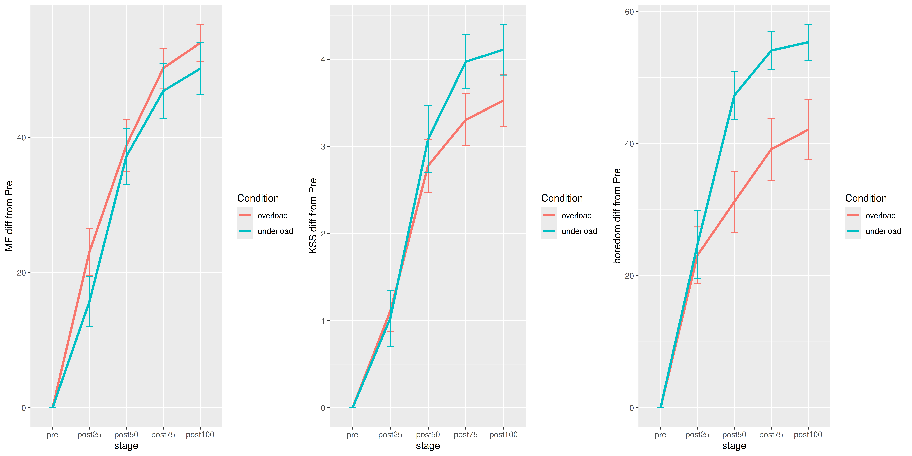

hypothesis 1, analysis, results, and interpretation
Both computerized activities would induce an increase in self-report mental fatigue over time
Analysis
- type: linear mixed models
- software: R with lmer and lmerTest
- dataset: “selfReport_long”
- contrasts:
- condition: a two-level variable (overload, underload)
- time: a four level variable (post25, post50, post75, post100) with polynomial contrasts
- formula:
mental fatigue score (diff from pre) ~ condition * time + (1|participant)Results:
Fixed effects:
Estimate Std. Error df t value Pr(>|t|)
(Intercept) 41.5288 2.6707 47.6475 15.550 < 2e-16 ***
conditionunderload -4.0321 2.0317 245.0000 -1.985 0.0483 *
stage.L 23.2797 2.8733 245.0000 8.102 2.56e-14 ***
stage.Q -5.9915 2.8733 245.0000 -2.085 0.0381 *
stage.C -0.7796 2.8733 245.0000 -0.271 0.7864
conditionunderload:stage.L 1.9945 4.0634 245.0000 0.491 0.6240
conditionunderload:stage.Q -3.0997 4.0634 245.0000 -0.763 0.4463
conditionunderload:stage.C 1.9922 4.0634 245.0000 0.490 0.6244
---
Signif. codes: 0 ‘***’ 0.001 ‘**’ 0.01 ‘*’ 0.05 ‘.’ 0.1 ‘ ’ 1Figures showing raw values, not used in the analysis

Figures showing change scores from “pre” (differences from “pre”), used in the analysis

Interpretations:
- mental fatigue was greater for overload
- mental fatigue increased over time for both conditions with linear and quadratic trends
- the increase of mental fatigue was not different between conditions
hypothesis 3, analysis, results, and interpretation
Overload fatigue would be associated with greater workload than underload, and particularly in the factors associated with mental aspects of the activity
Analysis
- type: linear mixed models
- software: R with lmer and lmerTest
- dataset: “selfReport_NASA_long”
- contrasts:
- condition: a two-level variable (overload, underload)
- formula:
NASA-TLX score (weighted) ~ condition + (1|participant)Results:
Fixed effects:
Estimate Std. Error df t value Pr(>|t|)
(Intercept) 85.837 2.431 70.000 35.30 <2e-16 ***
conditionunderload -55.175 3.439 70.000 -16.05 <2e-16 ***
---
Signif. codes: 0 ‘***’ 0.001 ‘**’ 0.01 ‘*’ 0.05 ‘.’ 0.1 ‘ ’ 1Figure: overall workload

Analysis
- type: linear mixed models
- software: R with lmer and lmerTest
- dataset: “selfReport_NASA_long” rearranged to show one row per each factor
- contrasts:
- factor: a six-level variable with physical demands as the comparison condition (sort of a baseline as we expect no effects there)
- condition: a two-level variable (overload, underload)
- formula:
mod = lmer(score ~ condition * factor + (1|subjID), data = data)Results:
Fixed effects:
Estimate Std. Error df t value Pr(>|t|)
(Intercept) 26.445 3.261 377.445 8.111 7.13e-15 ***
conditionunderload -16.622 4.371 385.000 -3.803 0.000166 ***
factor2 62.766 4.371 385.000 14.358 < 2e-16 ***
factor3 61.791 4.371 385.000 14.135 < 2e-16 ***
factor4 53.921 4.371 385.000 12.335 < 2e-16 ***
factor5 57.503 4.371 385.000 13.154 < 2e-16 ***
factor6 67.971 4.371 385.000 15.549 < 2e-16 ***
conditionunderload:factor2 -36.172 6.182 385.000 -5.851 1.04e-08 ***
conditionunderload:factor3 -43.424 6.182 385.000 -7.024 9.82e-12 ***
conditionunderload:factor4 -33.740 6.182 385.000 -5.458 8.66e-08 ***
conditionunderload:factor5 -31.856 6.182 385.000 -5.153 4.11e-07 ***
conditionunderload:factor6 -53.416 6.182 385.000 -8.640 < 2e-16 ***
---
Signif. codes: 0 ‘***’ 0.001 ‘**’ 0.01 ‘*’ 0.05 ‘.’ 0.1 ‘ ’ 1Figure: individual workload factors

Interpretations:
- overall workload (NASA-TLX weighted score) was greater for overload than underload
- analysis of the inddividual factors revealed that
- all factors were scored more highly in the overload than underload
- all other factors were scored greater than physical demands (which served as comparison–we expected no physical demand in a computer task)
- the differences between physical demand and each other score were larger for overload
- therefore, overload = greater workload across various domains and especially due to mental demands (sanity check)
hypothesis 4, analysis, results, and interpretation
The prospects of ending the task sooner would be more of an incentive in the overload-fatigue task than in the underload-fatigue task
In this direction but not significant
Exploratory: did motivation change? No
Analysis:
- type = linear mixed models
- software = R with lmer and lmerTest
- dataset = Stroop_longMotive, modified to have motives on separate rows
- contrasts:
- motives: a five-level variable with contrasts comparing everything against the first one (financial incentive)
- formula:
motive_value ~ condition * motive + (1|subjID)Results:
Estimate Std. Error df t value Pr(>|t|)
(Intercept) 49.3345 5.1906 288.3096 9.505 <2e-16 ***
conditionoverload 8.5583 6.7510 315.0000 1.268 0.206
motive2 8.3831 6.7510 315.0000 1.242 0.215
motive3 6.6892 6.7510 315.0000 0.991 0.323
motive4 4.0780 6.7510 315.0000 0.604 0.546
motive5 0.7312 6.7510 315.0000 0.108 0.914
conditionoverload:motive2 -3.2040 9.5473 315.0000 -0.336 0.737
conditionoverload:motive3 -3.0482 9.5473 315.0000 -0.319 0.750
conditionoverload:motive4 -5.0277 9.5473 315.0000 -0.527 0.599
conditionoverload:motive5 -4.7227 9.5473 315.0000 -0.495 0.621
---
Signif. codes: 0 '***' 0.001 '**' 0.01 '*' 0.05 '.' 0.1 ' ' 1Figure: The five motives’ scores ahead of each fatigue activity

Interpretations:
- participants were not differently motivated in the two fatiguing tasks
hypothesis 5, analysis, results, and interpretation
Overload fatigue would be associated with lower accuracy (and faster response times?) than underload fatigue, only for “congruent” “go” trials which were in both tasks
Analysis:
- type: linear mixed models, but equivalent to a t-test
- software: R with lmer and lmerTest
- dataset: Stroop_long
- formula:
experimentalBlock_Accuracy_congruent_go ~ condition + (1|subjID), Results:
Fixed effects:
Estimate Std. Error df t value Pr(>|t|)
(Intercept) 68.2593 0.4308 70.0000 158.46 <2e-16 ***
conditionunderload 24.5258 0.6092 70.0000 40.26 <2e-16 ***
---
Signif. codes: 0 ‘***’ 0.001 ‘**’ 0.01 ‘*’ 0.05 ‘.’ 0.1 ‘ ’ 1Analysis:
- formula:
experimentalBlock_MdnRT_congruent_go ~ condition + (1|subjID)Results:
Fixed effects:
Estimate Std. Error df t value Pr(>|t|)
(Intercept) 0.560611 0.006345 70.000000 88.349 < 2e-16 ***
conditionunderload -0.043744 0.008974 70.000000 -4.875 6.56e-06 ***
---
Signif. codes: 0 ‘***’ 0.001 ‘**’ 0.01 ‘*’ 0.05 ‘.’ 0.1 ‘ ’ 1
Interpretations:
- Accuracy for congruent go trials 24.53% higher in underload than overload
- Median response times: ca 560 ms for overload and ca 40 ms faster in underload –> Overload is adaptive but also more difficult therefore requiring more time
hypothesis 7, analysis, results, and interpretation
Mental fatigue induced through computerized activities will decrease motivation to perform the decision-making activity.
Analysis
- type: linear mixed models
- software: R with lmer and lmerTest
- dataset: “BART_subjLvl_long” modified to have motives on separate rows
- contrasts:
- condition: a three-level variable (basleine, overload, underload) with contrasts 1: atRest vs mean(overload, underload) and 2: overload vs underload
- motives: a five-level variable with contrasts comparing everything against the first one (financial incentive)
- formula:
motive score ~ condition * motive + (1|subjID)Results:
Fixed effects:
Estimate Std. Error df t value Pr(>|t|)
(Intercept) 64.88851 3.09041 169.22942 20.997 <2e-16 ***
condition1 -8.85543 3.69448 490.00000 -2.397 0.0169 *
condition2 -3.28834 3.19951 490.00000 -1.028 0.3046
motive2 -4.82794 3.69448 490.00000 -1.307 0.1919
motive3 2.46625 3.69448 490.00000 0.668 0.5047
motive4 0.64324 3.69448 490.00000 0.174 0.8619
motive5 -1.51537 3.69448 490.00000 -0.410 0.6819
condition1:motive2 -2.19943 5.22479 490.00000 -0.421 0.6740
condition2:motive2 -0.02163 4.52480 490.00000 -0.005 0.9962
condition1:motive3 2.05737 5.22479 490.00000 0.394 0.6939
condition2:motive3 0.47053 4.52480 490.00000 0.104 0.9172
condition1:motive4 2.64870 5.22479 490.00000 0.507 0.6124
condition2:motive4 3.30889 4.52480 490.00000 0.731 0.4650
condition1:motive5 0.69343 5.22479 490.00000 0.133 0.8945
condition2:motive5 5.34614 4.52480 490.00000 1.182 0.2380
---
Signif. codes: 0 ‘***’ 0.001 ‘**’ 0.01 ‘*’ 0.05 ‘.’ 0.1 ‘ ’ 1The five motives’ scores ahead of each bart session

Interpretations:
- participants felt motivated by the prospects of earning money in a manner that was not different from other sources of motivation
- overall, motivation to perform well (whatever the reason) was lower after completing the fatigue-inducing activity (whichever), with no difference between overload and underload